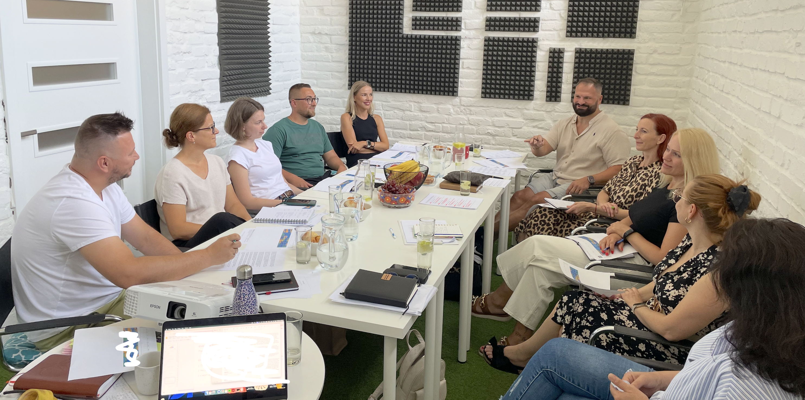

Team Deep Dive vám dá odpoveď na obe otázky — priamo z toho, čo sa naozaj deje vo vašom tíme.
Mám záujem o program
Team Deep Dive je o tom, aby si každý človek v tíme uvedomil: kde je jeho hodnota? Kde je jeho kúsok zodpovednosti? Kde je priestor, ktorý môže využiť, zlepšovať? Ktorý môže prevziať a „bojovať" zaň?
A kde naopak je priestor, kde potrebuje pomoc? Nie preto, že je slabý, ale preto, že to jednoducho nie je v súlade s ním. Že to nie je jeho silná stránka.
Nepoďme sa ďalej kúpať a podporovať priemernosť, ktorá bola veľakrát oslavovaná v našom školskom systéme.
Poďme práve pochopiť to, v čom sme unikátni. Každý z nás, náš tím, naša firma. A ako to celé môžeme pretaviť do nášho bežného fungovania, operatívy a rozhodnutí, ktoré robíme dennodenne.
A čím viac vecí okolo nás rieši AI, tým viac záleží na tom, čo v ľuďoch zostáva jedinečné.
Presne o tomto ide v Team Deep Dive.
Manažéri, lídri, tímy a jednotlivci riešia dennodenne rôznu paletu oblastí, záležitostí, problémov a výziev. Postup je jednoduchý, ale nie ľahký.
Toto všetko sa na Team Deep Dive pomenuje nahlas. A zrazu tam sedí tím, kde má každý okolo seba zrkadlá — a týmito zrkadlami sú jeho spolupracovníci.
Zrkadlo neodsudzuje. Len ukazuje späť to, čo tam je. Každý opíše, ako sám seba vníma a prečo koná tak, ako koná — a tým mu to zrkadlí: čo si všimli, čo ich prekvapilo, kde vidia inak. A to isté zrkadlo sa potom otočí aj na tím ako celok — nielen jednotlivec vidí seba jasnejšie, ale aj tím vidí sám seba.
Operatíva vám na toto nikdy nedá priestor. Vzniká z toho jasnosť, otvorená komunikácia a priestor na zdieľanie názorov, ktorý predtým nebol. Riešia sa nedorozumenia a frustrácie skôr, než sa stihnú nahromadiť. Zmapujú sa motivácie ľudí — pretože každý z nás ich má niekde inde.
A koľko vaša firma platí za to, že toto nemá explicitne pomenované? Nie na faktúre — ale v termínoch, ktoré nestíhajú, v kvalite, ktorá kolíše, a v ľuďoch, ktorí odchádzajú z dôvodov, čo sa dali riešiť mesiace predtým.
Všetko z Team Deep Dive, plus:
Presný harmonogram workshopu pripravím podľa veľkosti tímu a zvoleného variantu.
Obchodný tím zistil, že polovica ľudí si pod pojmom „náš produkt" predstavovala niečo úplne iné. Dôsledok: každý ho klientom komunikoval inak — jeden zdôrazňoval jednu vlastnosť, druhý inú. Tí istí klienti tak od toho istého tímu dostávali rozdielne verzie toho, čo vlastne kupujú. Až na workshope si to prvýkrát spoločne pomenovali a zjednotili.
Manažér iného tímu bol presvedčený, že „nemá tím" — ľudia mu prišli nesamostatní a nespoľahliví. Ukázalo sa, že chýbalo jasné odovzdávanie know-how. Po workshope si ho začali odovzdávať v reťazci, jeden druhému — a manažér prestal byť jediným bodom, na ktorom všetko stálo.
Pri inom klientovi sa na workshope ukázalo, že tím má veľa ľudí, čo skvele naštartujú projekt — ale málo tých, čo ho aj dotiahnu do konca. Keď si to pomenovali, začali si prácu deliť inak: kto naštartuje, odovzdá tomu, kto to dokončí.
Cena je vždy postavená na mieru — podľa veľkosti firmy aj podľa zvoleného balíka, Team Deep Dive alebo Team Deep Dive+. Zahŕňa individuálne sedenia s každým členom tímu, samotný workshop aj Gallup testy.
Orientačne: individuálne sedenie od €180 (90 min) / 4 500 Kč · tímový workshop od €1 800 / 45 000 Kč
Zistíme, či to dáva zmysel — pre vás aj pre mňa.
Mám záujem o program